Ralf Hütter – vocalen, vocoder, synthesizers, keyboards, (1970–heden) orgel, drums en percussie, gitaar, basgitaar (1970–1974)
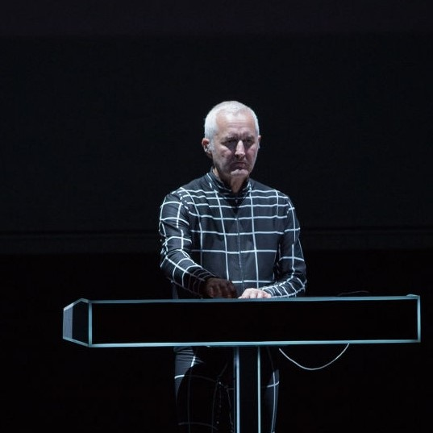Fritz Hilpert – elektronische percussie, technicus (1987–heden)
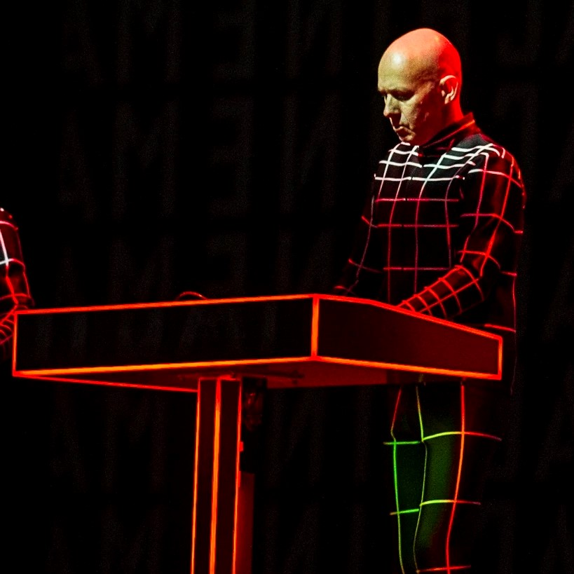Henning Schmitz – elektronische percussie, live keyboards (1991–heden), technicus (1978–heden)
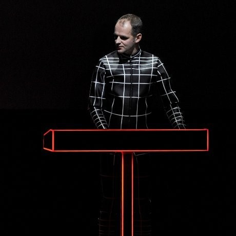Falk Grieffenhagen - live video technicus (2013–heden)

Florian Schneider-Esleben – synthesizers, achtergrondvocalen, vocoder, computer-gegenereerde vocalen, dwarsfluit (akoestisch en elektronisch), live saxofoon, percussie, elektrische gitaar, viool (1970–2008)
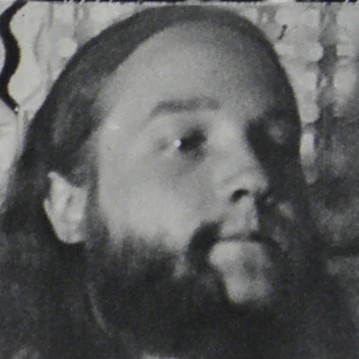Andreas Hohmann – drums (1970)
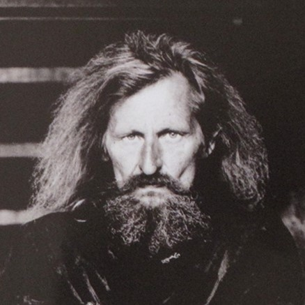Klaus Dinger – drums (1970–1971)
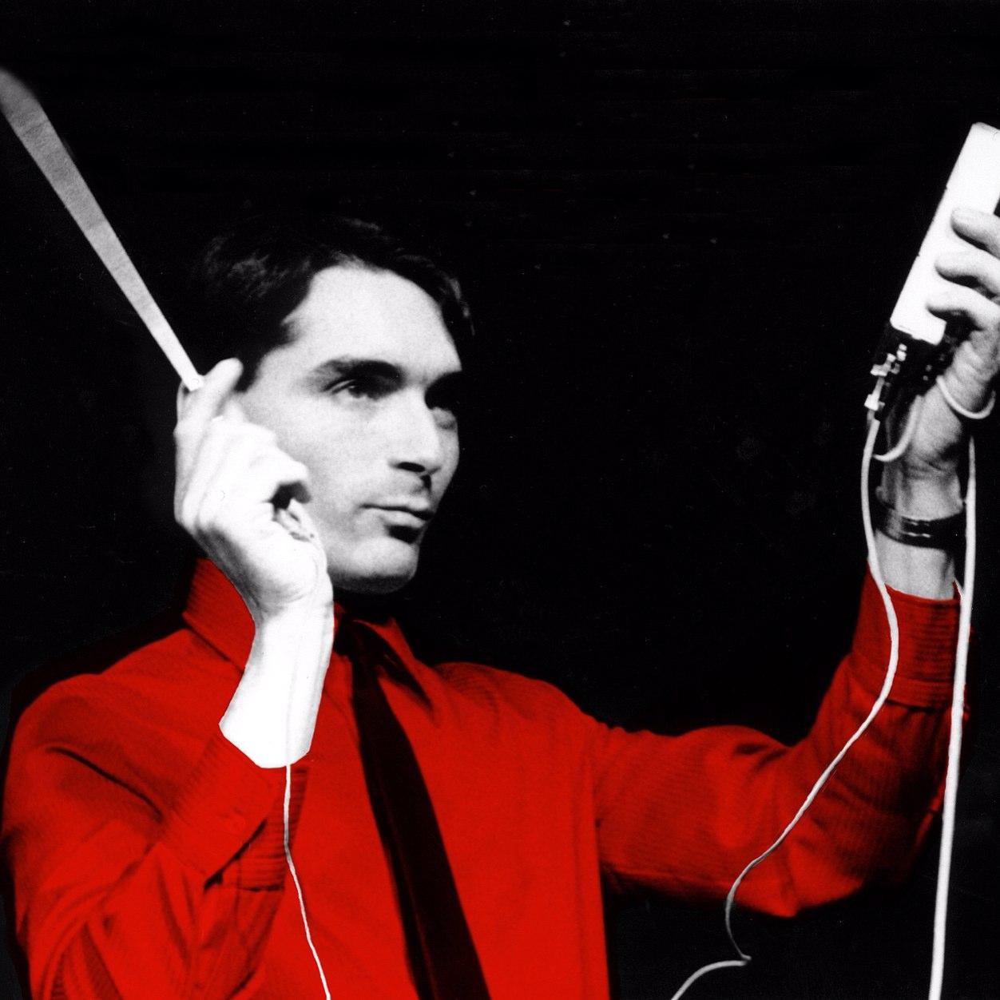Wolfgang Flür – elektronische percussie (1973–1987)
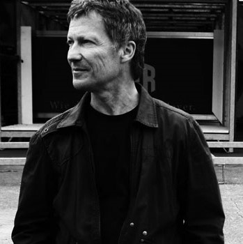Michael Rother – elektrische gitaar (1971)
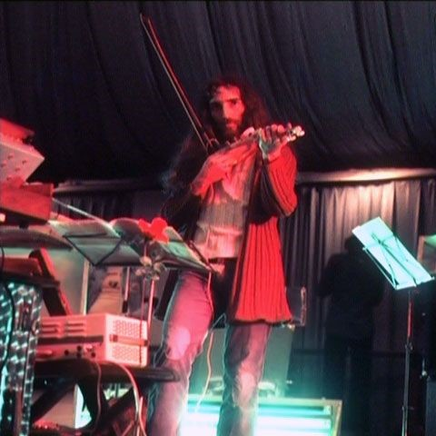Klaus Röder – elektrische gitaar, elektrische viool (1974)
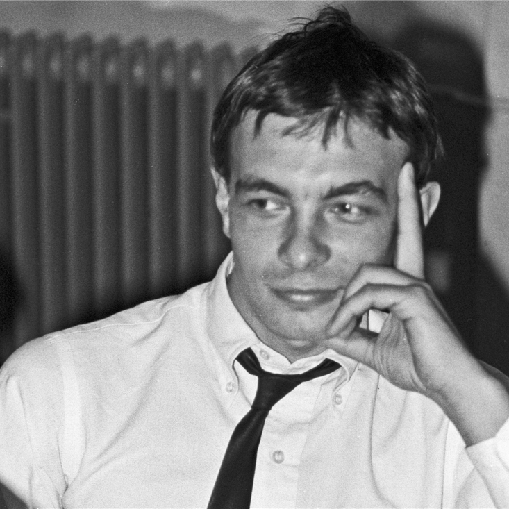Karl Bartos – elektronische percussie, live vibraphone, live keyboards (1975–1991)
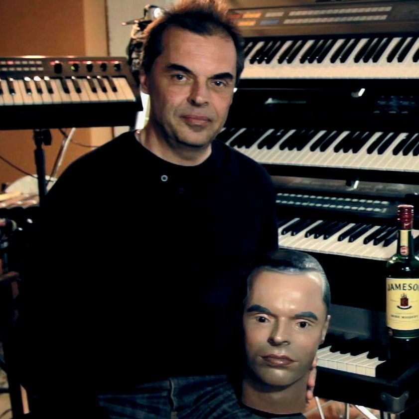Fernando Abrantes – elektronische percussie, synthesizer (1991). Zou zijn ontslagen omdat hij zonder toestemming van de band een dj-optreden in Sheffield had gedaan, dan wel te veel bewoog tijdens optredens.
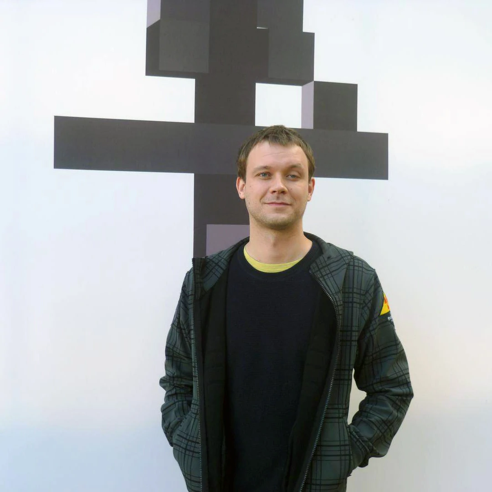Stefan Pfaffe – live video technicus (2008–2012)